건설기계설비산업기사 (2020-06-06 기출문제)
1과목: 기계제작법
1. 공작물을 양극(+), 전기저항이 적은 구리, 아연을 음극(-)으로 하여 적당한 용액 중에 넣어 통전하면 양극의 용출작용에 의하여 광택이 나게 하는 가공법은?
- 방전 가공
- 전해 연마
- 레이저 가공
- 전자빔 가공
(정답률: 알수없음)

2. 회전하는 상자에 공작물과 숫돌입자, 가공액, 콤파운드 등을 함께 넣어 공작물이 입자와 충돌하는 동안에 그 표면의 요철을 제거하며, 매끈한 가공면을 얻는 가공법은?
- 버니싱
- 숏 피닝
- 초음파 가공
- 배럴 가공
(정답률: 알수없음)
3. 주물에서 기공이 생기는 것을 방지하는 방법으로 틀리것은?
- 주형 내에 수분을 많게 한다.
- 주입 온도를 필요 이상 높게 하지 않는다.
- 탕도의 높이를 조절하여 압탕에 의한 쇳물에 압력을 가한다.
- 통기성을 좋게 한다.
(정답률: 알수없음)
4. 경사면 위를 연속적으로 원활하게 흘러 나가는 모양이며, 연한 재질의 공작물을 고속절삭 할 때 생기는 칩의 형태는?
- 균열형
- 열단형
- 전단형
- 유동형
(정답률: 알수없음)
5. 절삭공구 수명을 판정하는 기준이 아닌 것은?
- 완성 가공된 치수 변화가 일정량에 도달했을 때
- 절삭저항의 주분력에도 변화가 적어도 배분력, 이송분력이 급격히 증가될 때
- 가공면에 광택이 있는 무늬가 반점이 생길 때
- 가공 시 구성인선이 자주 생길 때
(정답률: 알수없음)
6. 볼트나 너트의 체결이 잘 되도록 구멍 주위 부분을 평탄하게 가공하는 드릴가공법은?
- 리밍
- 태핑
- 스폿 페이싱
- 보링
(정답률: 알수없음)
7. 다음 중 진원도를 표시하는 기호는?
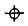
- ◎
- ○
- ⊥
(정답률: 알수없음)
8. 에어리 점(airy point)에 대한 설명으로 옳은 것은?
- 중앙의 변형이 최소가 되도록 지지하는 점(A=0.2386L)
- 측정면의 양단면이 항상 평형을 유지하도록 지지하는 점(A=0.2113L)
- 중립축 상의 변형이 최소가 되도록 지지하는 점(A=2203L)
- 전체 길이에 대하여 휨이 최소로 되고 양단과 중앙의 변형이 같도록 지지하는 점(A=02232L)
(정답률: 알수없음)
9. 인발작업에서 지름 5.5mm의 연강와이어를 인발하여 지름 4.5mm로 하였을 때 단면감소율은 약 몇 % 인가?
- 25.3
- 33.1
- 41.8
- 49.5
(정답률: 알수없음)
10. 측정기 중 게이지블록 측정면의 밀착상태, 즉 평면도 검사기구로 적합한 것은?
- 정반
- 자분탐상법
- 옵티컬 플랫
- 다이얼 게이지
(정답률: 알수없음)
11. 피복 아크 용접봉에서 피복제의 역할로 틀린 것은?
- 아크를 안정하게 한다.
- 용착금속을 보호한다.
- 용착금속의 급냉을 방지한다.
- 스패터의 발생을 많게 한다.
(정답률: 알수없음)
12. 소성가공에는 냉간가공과 열간가공이 있다. 열간가공에 대한 설명으로 옳은 것은?
- 고온에서 가공하는 것
- 재결정 온도 이상에서 가공하는 것
- 가열하면서 가공하는 것
- 변태점 이하의 낮은 온도에서 가공하는 것
(정답률: 알수없음)
13. 다음 중 밀링의 공구가 아닌 것은?
- 혼
- 엔드밀
- 메탈 쏘
- 더브테일 커터
(정답률: 알수없음)
14. 지철 또는 α철이라 하며 0.0025% 이하의 탄소량이 고용된 고용체로 현미경 조직이 백색으로 보이며 무르고 경도와 강도가 작고 상온에서 강자성체인 것은?
- 페라이트
- 펄라이트
- 시멘타이트
- 오스테나이트
(정답률: 알수없음)
15. 다음 표면경화법 중 화학적 방법이 아닌 것은?
- 침탄법
- 고주파 경화법
- 청화법
- 질화법
(정답률: 알수없음)
16. 수공구 취급에 대한 안전수칙으로 적합하지 않은 것은?
- 해머는 자루에서 빠지지 않도록 쐐기를 박는다.
- 렌치는 자기 몸 쪽에서 바깥쪽으로 미는 방식으로 사용한다.
- 드라이버의 날 끝이 흠의 나비와 길이에 맞는 것을 사용한다.
- 스크레이퍼 사용 시 한 손으로 일감을 잡는 것은 위험하다.
(정답률: 알수없음)
17. 밀링 작업 시 날 1개당 피드가 0.15mm, 커터날 수 6, 절삭속도 120m/mm, 밀링커터의 직경 100mm일 때, 밀링 머신의 테이블 이송속도는 약 몇 mm/min 인가?
- 144
- 244
- 344
- 444
(정답률: 알수없음)
18. 테르밋 용접에 대한 설명으로 틀린 것은?
- 기어, 축의 수리, 레일의 접합 등에 사용한다.
- Al분말과 산화철을 혼합한 것을 이용한다.
- 용접작업이 복잡하면서 고도의 기능이 필요하다.
- 점화재료는 과산화바륨, 마그네슘 등의 혼합물을 이용한다.
(정답률: 알수없음)
19. 선반가공에서 테이퍼 절삭방법이 아닌 것은?
- 체이싱 다이얼에 의한 방법
- 심압대 편위에 의한 방법
- 복식 공구대에 의한 방법
- 테이퍼 절삭장치에 의한 방법
(정답률: 알수없음)
20. 흑연 도가니로에 표시한 규격번호는 무엇을 의미하는가?
- 도가니의 중량
- 도가니의 높이
- 도가니의 내경
- 1회 용해할 수 있는 구리의 중량
(정답률: 알수없음)
2과목: 재료역학
21. 한 변의 길이가 a인 정사각형 단면의 중심축에 대한 단면계수는?
- a3/32
- a3/12
- a3/6
- a3/3
(정답률: 알수없음)
22. 그림과 같은 하중 상태에 있는 단순보에서 A 지점의 반력 RA는?
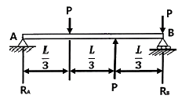
- P
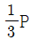
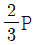
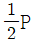
(정답률: 알수없음)
23. 그림과 같은 밧줄 AB와 AC가 P = 4kN의 무게를 지탱하고 있다. 밧줄 AB에 생기는 응력은 약 몇 MPa 인가? (단, 밧줄의 지름 d = 5cm 이다.)
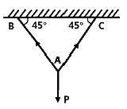
- 1.44
- 14.4
- 2.88
- 28.8
(정답률: 알수없음)
24. 단면적 50cm2의 연강봉의 온도 변화량이 20℃가 되어도 길이가 변화하지 않도록 하기 위해서는 250kN의 힘이 필요하다. 이 재료의 선팽창계수 α(/℃)의 값은? (단, 세로탄성계수는 210GPa 이다.)
- 0.8 × 10-5
- 1.19 × 10-5
- 1.5 × 10-5
- 1.9 × 10-5
(정답률: 알수없음)
25. 길이가 6m인 외팔보가 자유단에서 보의 중앙까지 선형적으로 변화하는 하중을 받고 있을 때 이 보에서 발생하는 최대 전단력은 몇 N 인가?
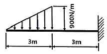
- 675
- 900
- 1350
- 2700
(정답률: 알수없음)
26. 보 AB에 집중 하중 P를 받고 있을 때 굽힘모멘트 선도는?
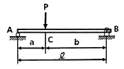
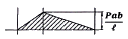
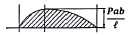
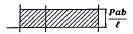
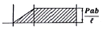
(정답률: 알수없음)
27. 지름 6cm의 환봉이 1200 N·m의 비틀림 모멘트를 받을 때 이 재료에 발생하는 최대 전단응력은 약 몇 MPa 인가?
- 18.3
- 21.3
- 24.3
- 28.3
(정답률: 알수없음)
28. 2축 응력상태에 있는 어느 재료에 σx = 40MPa, σy = -20MPa 이 작용하고 있을 때 최대 수직응력(σmax)과 최대 전단응력(τmax)은?
- σmax = 40MPa, τmax = 30MPa
- σmax = 70MPa, τmax = 45MPa
- σmax = 60MPa, τmax = 30MPa
- σmax = 45MPa, τmax = 20MPa
(정답률: 알수없음)
29. 원형단면의 보에 있어서 단면적을 A, 전단력을 V라 하면 최대전단응력은?
- 3V/2A
- 2V/3A
- 3V/4A
- 4V/3A
(정답률: 알수없음)
30. 인장강도가 600MPa인 취성 재료를 이용하여 5kN의 허용 하중을 받는 구조물을 만들려고 한다. 안전계수를 2로 할 때 이 재료의 단면적은 약 몇 mm2 인가?
- 8.45
- 16.67
- 32.24
- 64.45
(정답률: 알수없음)
31. 다음 그림과 같은 평면응력상태에서 주응력 σ1와 σ2를 구하는 식으로 옳은 것은?
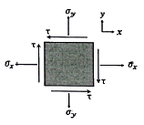
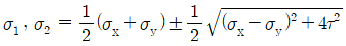
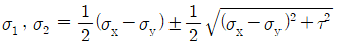
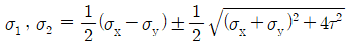
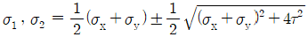
(정답률: 알수없음)
32. 지름 10cm인 중실축이 1000rpm으로 회전하고 있다. 이 차축이 전달시킬 수 있는 최대 동력은 약 몇 kW 인가? (단, 허용 전단응력은 30MPa 로 한다.)
- 121
- 307
- 617
- 1215
(정답률: 알수없음)
33. 프왕송 수를 m, 세로탄성계수를 E, 가로탄성계수 G라 할 때, G를 나타내는 식은?
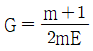
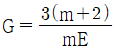
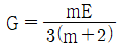
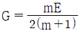
(정답률: 알수없음)
34. 균일 단면봉에 그림과 같은 하중이 작용할 때 L2부분에 발생하는 내력의 크기와 방향은?
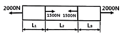
- 1500N, 인장
- 1500N, 압축
- 500N, 인장
- 500N, 압축
(정답률: 알수없음)
35. 코일 스프링에 500N의 힘을 작용시켰더니 3.0cm가 줄었다. 이때 스프링에 저장된 탄성에너지는 몇 N·m 인가?
- 6.0
- 7.5
- 15.0
- 30.0
(정답률: 알수없음)
36. 굽힘응력에 대한 설명으로 틀린 것은?
- 굽힘모멘트에 비례한다.
- 단면계수에 비례한다.
- 단면 2차 모멘트에 반비례한다.
- 중립축으로부터 멀어질수록 응력이 커진다.
(정답률: 알수없음)
37. 길이가 60cm인 강철봉이 인장력을 받아서 0.06cm 신장되었다. 봉의 체적이 400cm3 일 때 인장력의 크기는 약 몇 kN 인가? (단, 세로탄성계수는 210GPa 이다.)
- 100
- 120
- 140
- 160
(정답률: 알수없음)
38. 축 방향으로 인장응력 σ가 작용할 때 최대 전단응력(τmax)와 크기와 최대 전단응력이 생기는 각도(축 방향에 대한)에 대한 설명 중 옳은 것은?
- θ = 90°의 단면에 생기고, τmax = σ/2 이다.
- θ = 90°의 단면에 생기고, τmax = σ 이다.
- θ = 45°의 단면에 생기고, τmax = σ/3 이다.
- θ = 45°의 단면에 생기고, τmax = σ/2 이다.
(정답률: 알수없음)
39. 그림과 같이 길이 80cm인 외팔보가 50N/cm의 균일분포 하중을 받고 있을 때 자유단의 처짐을 0이 되게 하기 위해서는 집중하중 P의 값을 몇 N으로 하면 되는가?
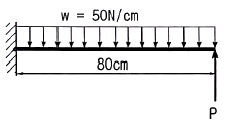
- 800
- 1500
- 1800
- 2000
(정답률: 알수없음)
40. 지름 100mm, 길이 2m인 기둥의 세장비는?
- 20
- 40
- 80
- 120
(정답률: 알수없음)
3과목: 기계설계 및 기계재료
41. 0.4%C의 탄소강을 950℃로 가열하여 일정시간 충분히 유지시킨 후 상온까지 서서히 냉각시켰을 때의 상온 조직은?
- 페라이트 + 펄라이트
- 페라이트 + 소르바이트
- 시멘타이트 + 펄라이트
- 시멘타이트 + 소르바이트
(정답률: 알수없음)
42. 다음 중 열처리에서 풀림의 목적과 가장 거리가 먼 것은?
- 조직의 균질화
- 냉간 가공성 향상
- 재질의 경화
- 잔류 응력 제거
(정답률: 알수없음)
43. 7:3 황동에 Sn을 1% 첨가한 것으로 전연성이 우수하여 관 또는 판을 만들어 증발기와 열교환기 등에 사용되는 것은?
- 에드미럴티 황동
- 네이벌 황동
- 알루미늄 황동
- 망간 황동
(정답률: 알수없음)
44. Fe에 Ni이 42~48%가 합금화된 재료로 전등의 백금선에 대용되는 것은?
- 콘스탄탄
- 백동
- 모넬메탈
- 플래티나이트
(정답률: 알수없음)
45. 다공질 잴에 윤활유를 흡수시켜 계속해서 급유하지 않아도 되는 베어링 합금은?
- 켈밋
- 루기메탈
- 오일라이트
- 하이드로날륨
(정답률: 알수없음)
46. 주철을 파면에 따라 분류할 때 해당되지 않는 것은?
- 회주철
- 가단주철
- 반주철
- 백주철
(정답률: 알수없음)
47. 18-8형 스테인리스강의 특징에 대한 설명으로 틀린 것은?
- 합금성분은 Fe를 기반으로 Cr 18%, Ni 8% 이다.
- 비자성체이다.
- 오스테나이트계이다.
- 탄소를 다량 첨가하면 피팅 부식을 방지할 수 있다.
(정답률: 알수없음)
48. 다음 중 소결정질합금이 아닌 것은?
- 위디아(Widia)
- 탕갈로이(Tungaloy)
- 카보로이(Carboloy)
- 코비탈륨(Cobitalium)
(정답률: 알수없음)
49. 열가소성 재료의 유동성을 측정하는 시험방법은?
- 뉴턴 인덱스법
- 멜트 인덱스법
- 캐스팅 인덱스법
- 샤르피 시험법
(정답률: 알수없음)
50. 순철의 변태에서 α-Fe이 γ-Fe로 변화하는 변태는?
- A1 변태
- A2 변태
- A3 변태
- A4 변태
(정답률: 알수없음)
51. 용접이음의 단점에 속하지 않는 것은?
- 내부 결함이 생기기 쉽고 정확한 검사가 어렵다.
- 다른 이음작업과 비교하여 작업 공정이 많은 편이다.
- 용접공의 기능에 따라 용접부의 강도가 좌우된다.
- 잔류응력이 발생하기 쉬워서 이를 제거하는 작업이 필요하다.
(정답률: 알수없음)
52. 어떤 블록 브레이크 장치가 5.5kW의 동력을 제동할 수 있다. 브레이크 블록의 길이가 80mm, 폭이 20mm라면 이 브레이크의 용량은 몇 MPa·m/s인가?
- 3.4
- 4.2
- 5.9
- 7.3
(정답률: 알수없음)
53. 8m/s의 속도로 15kW의 동력을 전달하는 평벨트의 이완측 장력(N)은? (단, 긴장측의 장력은 이완측 장력의 3배이고, 원심력은 무시한다.)
- 938
- 1471
- 1961
- 2942
(정답률: 알수없음)
54. 스프링 종류 중 하나인 고무 스프링(rubber spring)의 일반적인 특징에 관한 설명으로 틀린 것은?
- 여러 방향으로 오는 하중에 대한 방진이나 감쇠가 하나의 고무로 가능하다.
- 형상을 자유롭게 선택할 수 있고, 다양한 용도로 적용이 가능하다.
- 방진 및 방음 효과가 우수하다.
- 저온에서의 방진 능력이 우수하여 –10℃ 이하의 저온저장고 방진장치에 주로 사용된다.
(정답률: 알수없음)
55. 나사의 종류 중 먼지, 모래 등이 나사산 사이에 들어가도 나사의 작동에 별로 영향을 주지 않으므로 전구와 소켓의 결합부, 또는 호스의 이음부에 주로 사용되는 나사는?
- 사다리꼴나사
- 톱니나사
- 유니파이 보통나사
- 둥근나사
(정답률: 알수없음)
56. 축을 형상에 따라 분류할 경우 이에 해당되지 않는 것은?
- 크랭크축
- 차축
- 직선축
- 유연성축
(정답률: 알수없음)
57. 45kN의 하중을 받는 엔드 저널의 지름은 약 몇 mm 인가? (단, 저널의 지름과 길이의 비 길이/지름=1.5 이고, 저널이 받는 평균압력은 5MPa 이다.)
- 70.9
- 74.6
- 77.5
- 82.4
(정답률: 알수없음)
58. 회전수 1500rpm, 축의 직경 110mm인 묻힘키를 설계하려고 한다. 폭이 28mm, 높이가 18mm, 길이가 300mm일 때 묻힘키가 전달할 수 있는 최대 동력(kW)은? (단, 키의 허용전단응력 τa = 40MPa 이며, 키의 허용전단응력만을 고려한다.)
- 933
- 1265
- 2903
- 3759
(정답률: 알수없음)
59. 기어 절삭에서 언더컷을 방지하기 위한 방법으로 옳은 것은?
- 기어의 이 높이를 낮게, 압력각은 작게 한다.
- 기어의 이 높이를 낮게, 압력각은 크게 한다.
- 기어의 이 높이를 높게, 압력각은 작게 한다.
- 기어의 이 높이를 높게, 압력각은 크게 한다.
(정답률: 알수없음)
60. 외경 10cm, 내경 5cm의 속빈 원통이 축 방향으로 100kN의 인장 하중을 받고 있다. 이 때 축 방향 변형률은? (단, 이 원통의 세로탄성계수는 120 GPa 이다.)
- 1.415×10-4
- 2.1415×10-4
- 1.415×10-3
- 2.415×10-3
(정답률: 알수없음)
4과목: 유압기기 및 건설기계일반
61. 유압작동유가 구비해야 할 조건으로 적절하지 않은 것은?
- 비압축성일 것
- 점도지수가 작을 것
- 화학적으로 안정적일 것
- 압력변화에 따른 체적변화가 작을 것
(정답률: 알수없음)
62. 실린더의 선정 시 주의사항으로 적절하지 않은 것은?
- 행정 길이가 긴 경우는 로드의 강도를 고려한다.
- 충격에 대한 완충 능력이 부족하다면 외부 완충기의 설치를 검토한다.
- 부하에 대한 실린더 길이의 선정 기준으로 좌굴 강도를 기준으로 할 수 있다.
- 빠른 속도를 필요로 하는 경우 부항류을 크게 잡는다.
(정답률: 알수없음)
63. 아래 기호의 명칭은?
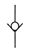
- 무부하 밸브
- 감압 밸브
- 체크 밸브
- 릴리프 밸브
(정답률: 알수없음)
64. 다음 전환밸브의 기호가 나타내는 포트수와 위치수로 옳은 것은?
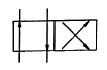
- 2포트 2위치 밸브
- 4포트 2위치 밸브
- 2포트 4위치 밸브
- 4포트 4위치 밸브
(정답률: 알수없음)
65. 펌프의 보조로 사용하며, 유압 에너지를 축적하고 압력을 보상해주는 기기는?
- 어큐뮬레이터
- 스트레이너
- 개스킷
- 오일 쿨러
(정답률: 알수없음)
66. 아래 기호의 명칭은?
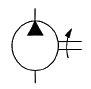
- 단동 실린더
- 공기압 모터
- 유압 모터
- 유압 펌프
(정답률: 알수없음)
67. 체크밸브, 릴리프 밸브 등에서 압력이 상승하고 밸브가 열리기 시작하여 어느 일정한 흐름의 양이 인정되는 압력은?
- 오버라이드 압력
- 오리피스 압력
- 크래킹 압력
- 리시드 압력
(정답률: 알수없음)
68. 유압 장치의 특징으로 적절하지 않은 것은?
- 무단 변속이 가능하다.
- 고압에서 누유의 위험이 있다.
- 오일에 기포가 섞여 작동이 불량할 수 있다.
- 먼지나 이물질에 의한 고장의 우려가 없다.
(정답률: 알수없음)
69. 펌프 토출량이 0.01m3/s이고, 사용하는 유압 실린더의 피스톤 직경이 85mm일 경우 이유압 실린더의 전진운동 속도는 약 몇 m/s 인가?
- 0.88
- 1.76
- 3.52
- 5.28
(정답률: 알수없음)
70. 다른 수압 면적을 가진 유압 실린더 등을 사용하여 시스템의 일부 압력을 높여주는 회로로 가장 적합한 것은?
- 중압 회로
- 서지 회로
- 감압 회로
- 무부하 회로
(정답률: 알수없음)
71. 지게차에서 사용하는 작업장치 중 고르지 못한 노면이나 경사지 등에서 깨지기 쉬운 화물 및 불안전한 화물의 낙하를 방지하기 위해 포크 상단에 상하 작동할 수 있도록 압력판을 부착한 것은?
- 힌지드 버킷
- 블록 클램프
- 로드 스테빌라이저
- 사이드 시프트 마스크
(정답률: 알수없음)
72. 도로 포장 및 다짐 건설기계가 아닌 것은?
- 롤러
- 왜건
- 아스팔트 피니셔
- 콘크리트 피니셔
(정답률: 알수없음)
73. 진동과 충격을 억제하기 위해 사용되는 방진기, 완충기와 같은 배관의 지지 장치는?
- 행거
- 서포트
- 브레이스
- 레스트레인트
(정답률: 알수없음)
74. 기중기에서 기둥박기, 건물의 기초공사에 사용되는 작업장치는?
- 훅
- 셔블
- 드래그 라인
- 파일 드라이버
(정답률: 알수없음)
75. 평탄 작업, 경사면 절삭, 배수로 굴착 등을 할 수 있으며, 장비 규격은 블레이드(배토판)의 길이로 나타내는 건설기계는?
- 지게차
- 타워크레인
- 모터 그레이더
- 아스팔트 살포기
(정답률: 알수없음)
76. 무한궤도식(크롤러형)과 비교한 타이어식(휠형) 굴삭기의 특징으로 적절하지 않은 것은?
- 기동성이 좋다.
- 주행저항이 크다.
- 견인력이 약하다.
- 암석, 암반지대에서 작업할 때 타이어가 손상되기 쉽다.
(정답률: 알수없음)
77. 8톤의 짐을 2m/s의 속도로 견인할 때 필요한 동력은 약 몇 kW 인가? (단, 견인 마찰 계수는 0.15 이다.)
- 19.9
- 23.5
- 28.7
- 32.1
(정답률: 알수없음)
78. 준설선의 종류가 아닌 것은?
- 버킷 준설선
- 디퍼 준설선
- 그래브 준설선
- 샌드 드레인 준설선
(정답률: 알수없음)
79. 모터 그레이더의 주행 동력 전달장치 구성품이 아닌 것은?
- 아우트리거
- 클러치
- 변속기
- 탠덤 드라이브장치
(정답률: 알수없음)
80. 굴삭기의 3대 주요부로 적절하지 않은 것은?
- 중간 구동체
- 작업장치
- 상부 회전체
- 하부 주행체
(정답률: 알수없음)